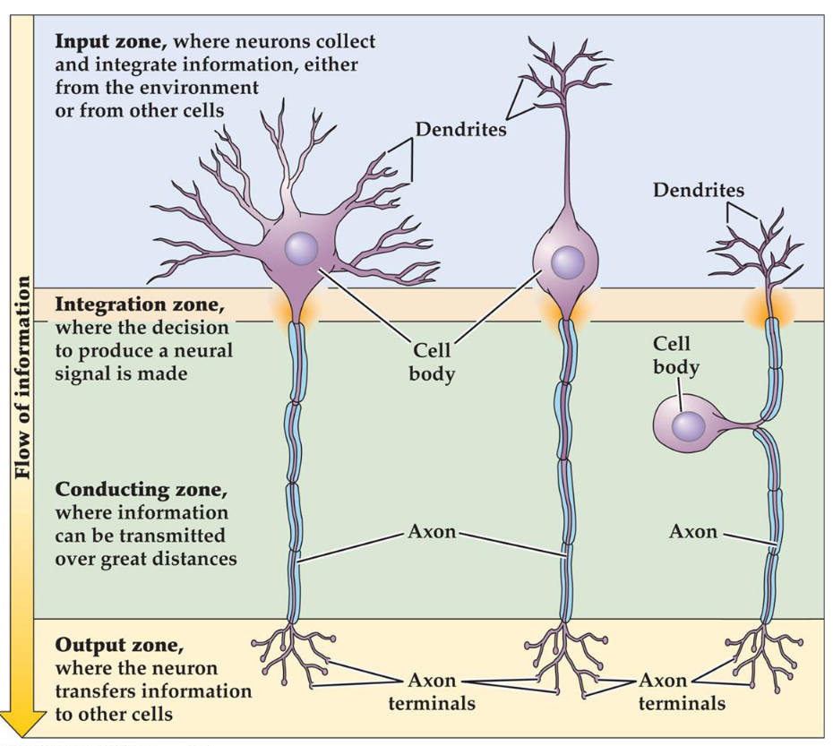
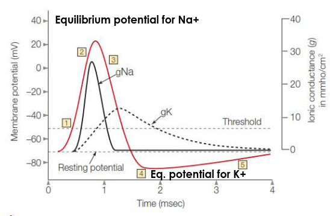
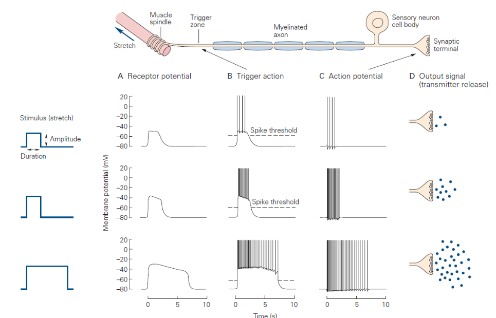
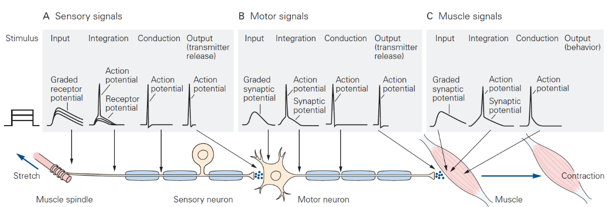
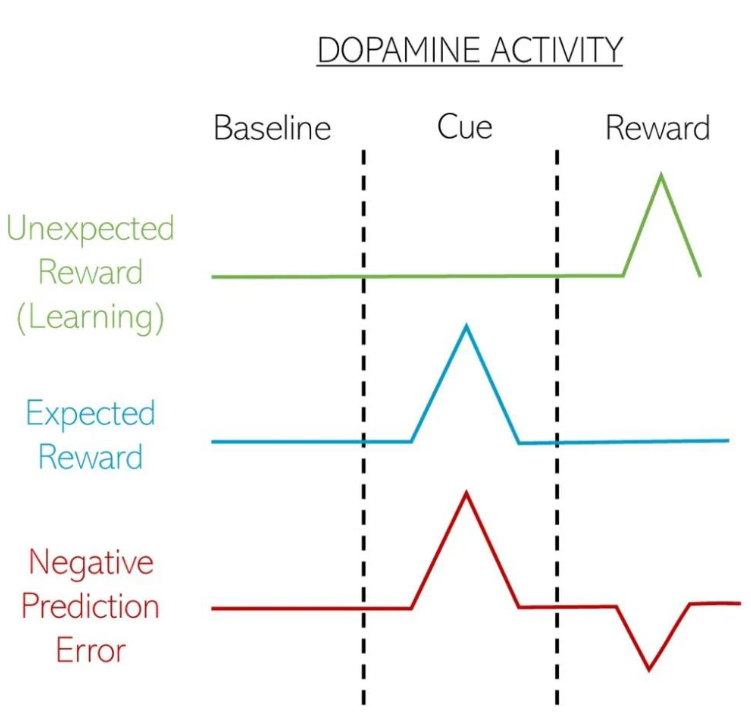

Information sharing between neurons

Transferring information involves transient changes in the electrical state of the neuron produced by temporary changes in the electric current into and out of the cell. The electric state of a resting neuron has a voltage of -70 mV less than the voltage outside the neuron. This difference in charge can be achieved thanks to the asymmetric distribution of ions across the cell membrane. Two main mechanisms:
- Na+/K+ pump:
- Use energy to actively transport ions through the membrane
- transports more NA+ outside than K+ inside
- creates a concentration gradient: Na+ wants to enter the cell, K+ wants to exit the cell
- Ion channel:
- Allow ions to flow passively down their concentration gradient
- the membrane permeability to K+ is larger because there are many more K+ - selective channels than any other type of ion channel --> creates electrical gradient, as K+ exit the cell, they leave behind a cloud of negative charge on the inner surface of the membrane
Having this different voltage allow the nuron to work as a battery and the voltage can be used to activate the neuron and share information. A neuron works like this: 
- Depolarization: the neuron activate and the voltage-gated Na+ channels open. The influx of positive charge neutralize the negativa charge inside.
- The equilibrium potential.
- Voltage gated K+ channels open, allowing K+ to flow out of the neuron down its concentration gradient.
- Hyperpolarization: The neuron goes under its normal equilibrium state in order to have a periond when it can't be activated (Refractory period).
- Return to normal resting phase.

An example of information sharing: the knee-jerk reflex

Electrical and chemical synapses
Inside the neuron, the information flow with electricity but, when the information needs to be shared, the synapses can use both electrical and chemical signals (one or the other for each synapse).
- Electrical synapses: neuronal membranes are touching at gap junctions, and the cytoplasm of the two neurons are essentially continuous. Electrical synaptic transmission depends on the instantaneous transmission of the flow of ions from the pre- to the post-synaptic neuron.
- Chemical synapses: no structural continuity between pre- and postsynaptic neurons, synaptic cleft separates the neurons. Chemical synaptic transmission depends on the diffusion of a neurotransmitter across the synaptic cleft.
Chemical synapses
They share information using a chemical substance that binds receptors in the postsynaptic membrane of the target cell called neurotransmitter. Presynaptic terminals are specialized swellings of the axon which contains synaptic vesicles filled with neurotransmitters. Inactivation of Neurotransmitters can be accomplished by
- Active reuptake of the substance back into the presynaptic terminal
- Enzymatic breakdown or degradation of the transmitter in the synaptic cleft
- Diffusion of the neurotransmitter away from the site of action (e.g., in the case of hormones that act on target cells distant from the synaptic terminals)
The effect of a neurotransmitter to a postsynaptic neuron does not depend on the neurotransmitter itself, but on the receiving neuron. A signal can be perceived differently if received by two neurons. 
In another experiment, we saw that, giving a monkey a cup with some juice:
- If the monkey expected a low amount of juice and received a medium amount, the dopamine spiked
- if the monkey expected a high amount of juice and received a medium amount, the dopamine plumbed. -> The size of the reward doesn't matter in absolute value but in relative. Timing also matter.
This works also in humans, if we give them 2 decks of card and reward or punish them depending on the drawn card, the dopamine changes accordingly to the reward.
Slide 6
Instrumental conditioning
A response is gradually changed across successive trials toward a desired outcome, reinforcing a behavior.
| delivery outcome | omission outcome | |
|---|---|---|
| positive outcome | positive reinforcer (+ behavior) |
negative punishment (- behavior) |
| negative outcome | positive punishment (- behavior) |
negative reinforcer (+ behavior) |
Schedule
- Continuous: faster learning
- Partial: slower extinction
Partial scheduling ratios
- Fixed ratio: high steady learning with slower learning after outcome delivery
- Variable ratio: high and steady learning
- Fixed interval: slow rate, high response near the interval end
- Variable interval: slow steady rate
Slide 7
There are two ways of learning something:
- Cognitive map: create a mental map of the situation and navigate it to reach a goal
- Stimulus response: memorize the path to follow to reach the goal
gen 0
Toleman's maze experiment: put some rats on a complicate maze and see if they learn to navigate it. The rats are divided in two groups: one receives food reward and the other doesn't. The group which receives a food reward navigates the maze much more efficiently. In further experiments, have been discovered that, if the food reward is given to the groups that has received no reward for the past trials, they rapidly catch up with the other group showing latent learning.
Gen 1
To test if the behavior was goal directed or habitual, they trained a group of rats to get a reward after a particular behavior, then devaluated the reward and they tested if the behavior would be still perpetrated. The dorsomedial striatum is more active during goal directed behavior while the dorsolateral during the habitual.
Gen 2
It is the same as Gen 1 but on humans. To gather information on human brains, they used MRI. The results were that, after little training, the behavior was goal directed while it was habitual after intense training. The medial OFC responded more in goal directed behaviors while the DLS responded more in habitual behaviors.